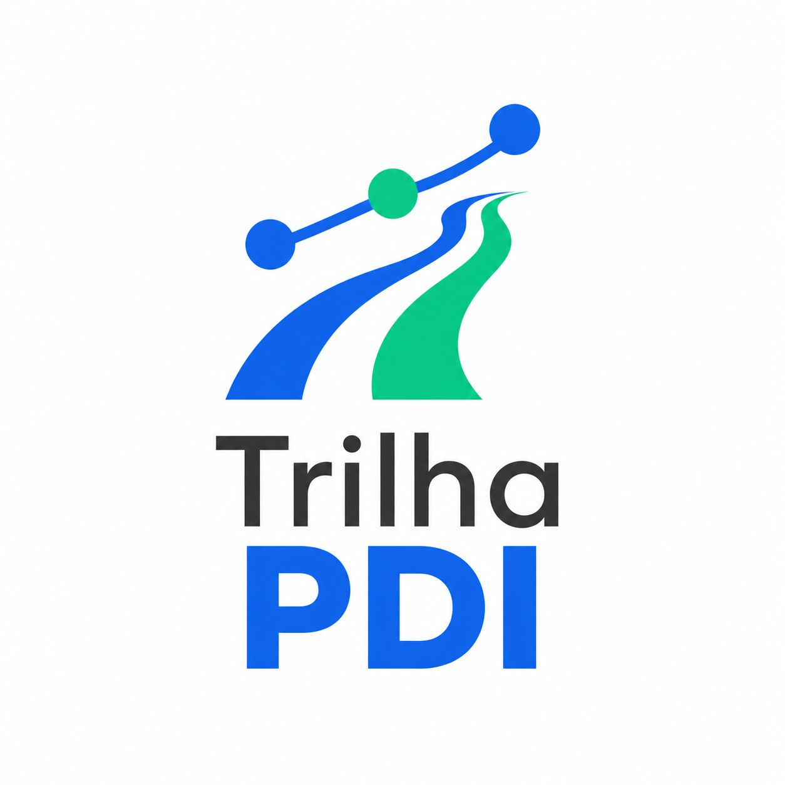

Bem-vindo ao Trilha PDI

O Trilha PDI é uma plataforma digital desenvolvida para transformar o acompanhamento pedagógico do seu filho em uma jornada simples, transparente e acessível.
Sabemos que o Plano de Desenvolvimento Individual (PDI) é fundamental para garantir o aprendizado de alunos com necessidades educacionais específicas no Atendimento Educacional Especializado (AEE). No entanto, entendemos que documentos em papel e relatórios extensos nem sempre facilitam a comunicação do dia a dia.
Por isso, o Trilha PDI conecta a escola e a família em um só lugar. Pelo celular ou computador, você acompanha cada etapa do desenvolvimento do seu filho:
- Metas Claras: Visualize os objetivos traçados para cada área de aprendizagem, autonomia e convivência.
- Linha do Tempo Visual: Acompanhe a evolução em tempo real por meio de porcentagens e indicadores simples de entender.
- Diário de Conquistas: Receba fotos, recados e relatos das pequenas e grandes vitórias alcançadas durante as atividades.
O que é PDI?
O Plano de Desenvolvimento Individual (PDI) é um documento pedagógico criado para mapear as necessidades, habilidades e o potencial de estudantes com necessidades educacionais específicas.
Em vez de aplicar uma avaliação padronizada, o PDI estabelece metas personalizadas de aprendizagem, autonomia, comunicação e convivência social. Ele funciona como um mapa estratégico para o Atendimento Educacional Especializado (AEE), definindo as adaptações necessárias para que o aluno evolua no seu próprio ritmo com o suporte adequado da escola.